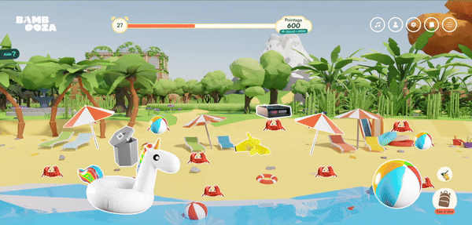
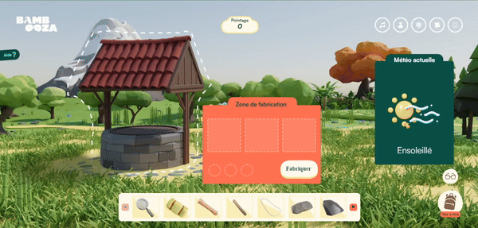
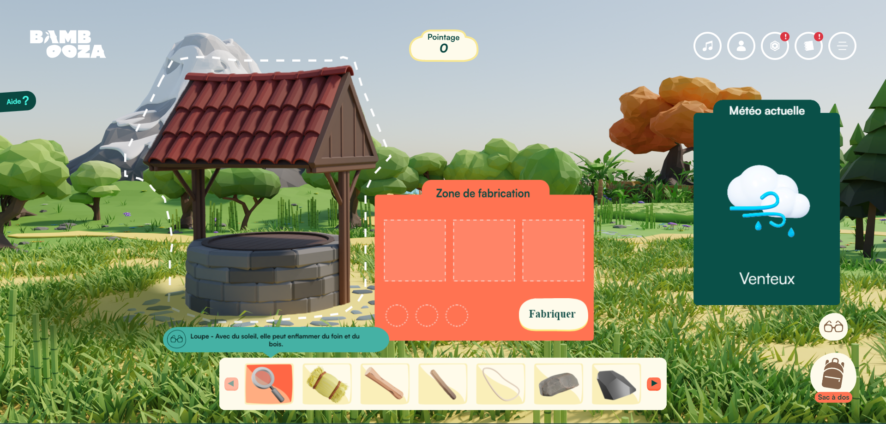

Plage de la procrastination
La plage de la procrastination est un jeu qui travaille la motivation et la capacité à créer un
environnement propice
au travail des personnes TDAH. Le but est de cliquer sur le plus de crabes possibles en faisant
un maximum de points dans
un temps déterminé. Chaque crabe rapporte un certain nombre de points. Par contre, la plage est
remplie d'obstacles,
derrière lesquels, les crabes peuvent se cacher. À l'aide du balai dans le sac à dos ,qui est un
peu une sorte de sac à
outils, on peut enlever les obstacles et y voir plus clair. Il y a également de la musique pour
ajouter au côté accablant
du jeu.
Crabes
Lorsqu'on clique sur un crabe, il est renversé et tombe sur son dos. On ne peut ensuite
plus cliquer sur lui
et
obtenir
des points jusqu'à ce qu'il se relève après un certain temps. Les crabes sortent
graduellement du niveau
aléatoirement
et seront tous sortis avant que la moitié du temps soit écoulée.

Système de pointage
Chaque crabe rapporte initialement 100 points. Si le joueur clique rapidement sur un autre crabe
après en avoir déjà cliqué un, avant un certain délai, un combo débute et les points sont
multipliés. Le
multiplicateur ou le
combo va jusqu'à x5, un crabe peut donc valoir 500 points si on est habile et rapide. On perd le
combo
dès qu'on ne clique pas un autre crabe dans les temps.

Obstacles
Les obstacles apparaissent au début du niveau et ne peuvent pas être enlevés tant que le
joueur n'obtient
pas le balai.
Après un dialogue, le joueur obtient le balai et peut enlever les obstacles. Lorsqu'il
sélectionne le balai,
le temps
s'arrète dans le jeu pour lui laisser le temps d'enlever les obstacles. Une fois enlevé,
les obstacles ne
réapparaissent
pas.
Puits de l'adaptation
Le puits de l'adaptation est un jeu qui travaille sur la capacité d'adaptation des personnes
TDAH. Dans ce jeu, le joueur
doit construire un mécanisme pour récupérer de l'eau dans le puits. Pour se faire, différents
objets sont disponibles en
bas de l'écran. Le joueur doit trouver une série de combinaisons à faire pour construire
différents objets et finalement
construire le mécanisme pour récupérer l'eau du puits. Il y a également un système de météo
qui peut influencer les
différentes combinaisons possibles. Pour finir, au fur et à mesurer que le joueur fabrique des
objets utiles au mécanisme,
il peut les poser sur le puits pour le réparer.
Système de fabrication
Dans le milieu de l'écran, il y a une zone où on peut poser des objets pour en fabriquer
d'autres. Lorsque le joueur
clique sur le bouton fabriquer, on vérifie si la combinaison d'objets forme une recette.
Si oui,
on détruit
les objets utilisés s'ils sont à usage unique et on donne le nouvel objet fabriqué au
joueur.
Le joueur aura des
indications sur quels objets peuvent former une recette sous forme de crochets pour
indiquer les
bons items et de "X"
pour indiquer les mauvais items.


Système de météo
Durant la période de jeu, la météo change continuellement et forme des cycles. À chaque
période de temps, on
passe à la
prochaine météo. Il y a certaines recettes qui peuvent seulement être faites si la
bonne météo est
en cours. Comme par
exemple, pour faire un feu, il faut que la météo soit ensoleillé. Pour empêcher le
joueur de devoir attendre la
météo, il peut
cliquer sur la météo pour la changer lui-même.
Lunettes
Les lunettes permettent d'obtenir des informations sur les objets qui peuvent aider à déterminer
dans quelle
recette ils
sont utilisés. Lorsque le joueur équipe les lunettes et qu'il clique sur un objet, ces
informations sont
affichées. Elles
donnent des indices sur quelle météo est nécessaire, quelle recette l'objet est utilisé ou
encore avec quoi
le combiner.
